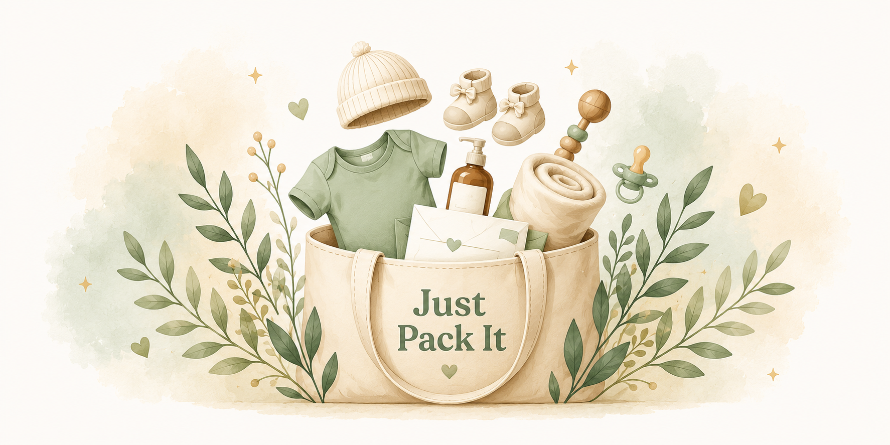

Twoja interaktywna lista do pakowania
Odpowiedz na kilka krótkich pytań, aby dopasować przygotowania do Twojej sytuacji.
Tych rzeczy nie musisz pakować:
Lista dla Instytutu Centrum Zdrowia Matki Polki w Łodzi została przygotowana na podstawie informacji dla kobiet ciężarnych dotyczących ICZMP, opublikowanych przez Fundację Cor Infantis. Nie jest to materiał opublikowany bezpośrednio przez szpital.
Zobacz źródło ↗✅ Jeśli jeszcze nie masz wybranej położnej środowiskowej, warto zrobić to teraz.
ℹ️ Położna może odwiedzać Ciebie i Maluszka po porodzie oraz pomagać w pierwszych dniach po powrocie do domu.
0 z 0 rzeczy spakowanych
Możesz stworzyć własną listę, dodając poniżej potrzebne rzeczy do odpowiednich kategorii. Warto wcześniej sprawdzić oficjalne zalecenia wybranego szpitala.
Lista została opracowana na podstawie zaleceń wybranego szpitala. Jeśli chcesz, możesz dodać własne przedmioty i przypisać je do odpowiedniej kategorii.
Dodatkowe rzeczy, które mogą przydać się po cesarskim cięciu.
Otwórz gotową listę do wydruku lub zapisz ją jako plik PDF.
Niektóre linki do produktów w Just Pack It są linkami partnerskimi. Jeśli kupisz produkt przez taki link, Just Pack It może otrzymać niewielką prowizję. Nie wpływa to na cenę produktu.
Just Pack It jest i pozostaje bezpłatne. 🤍 Jeśli aplikacja okazała się dla Ciebie pomocna, możesz postawić mi symboliczną kawę i wesprzeć jej dalszy rozwój.
☕ Postaw mi kawę Dziękuję, że korzystasz z Just Pack It! 🤍Przywróć oryginalną listę i usuń swój dotychczasowy postęp.